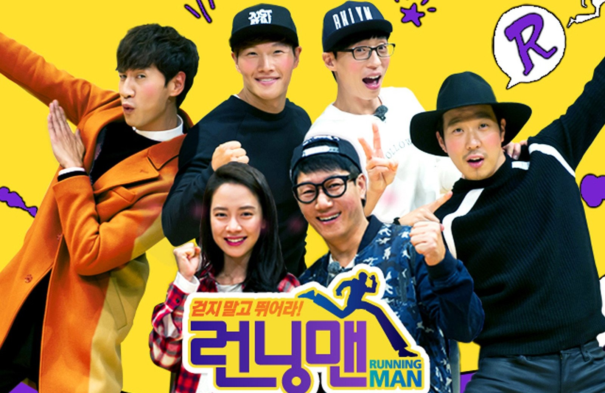
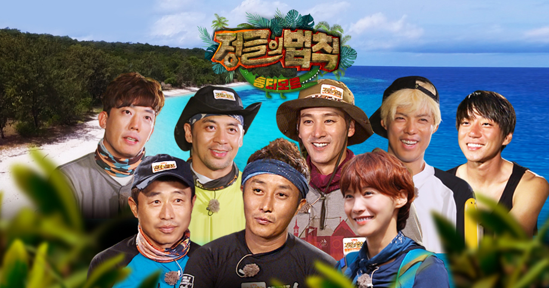
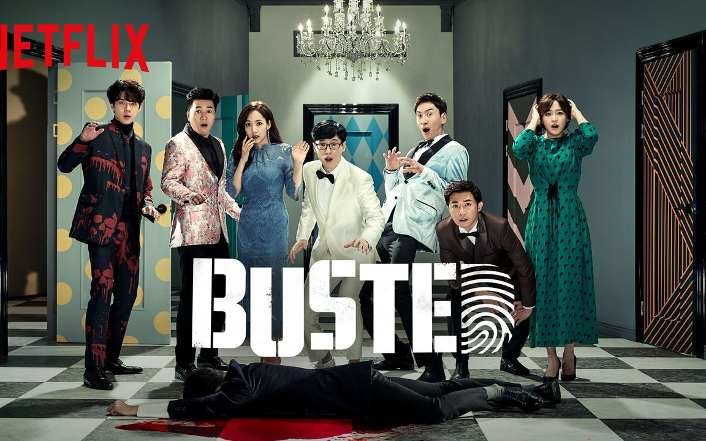
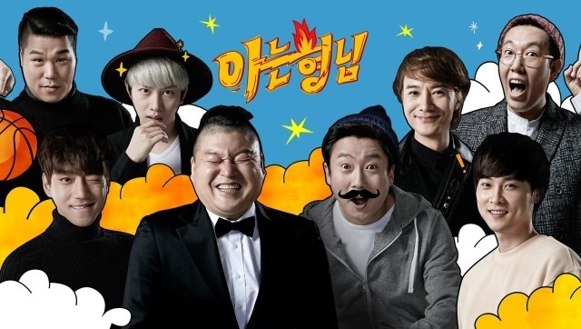
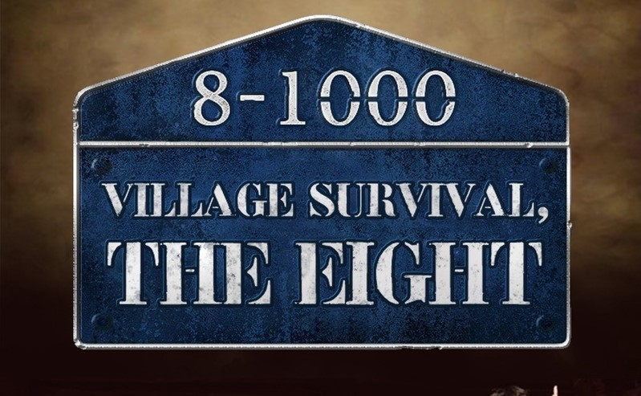
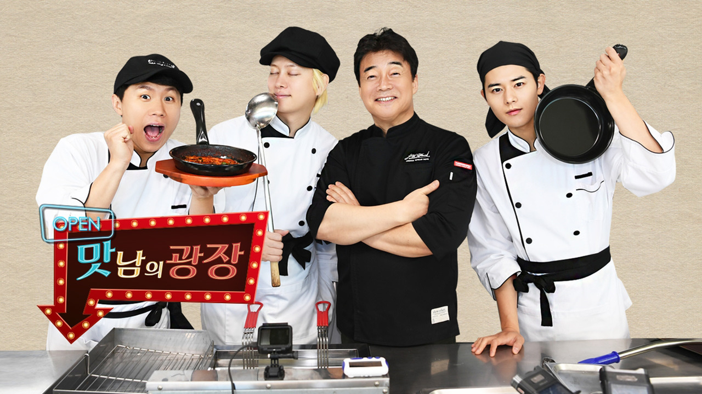
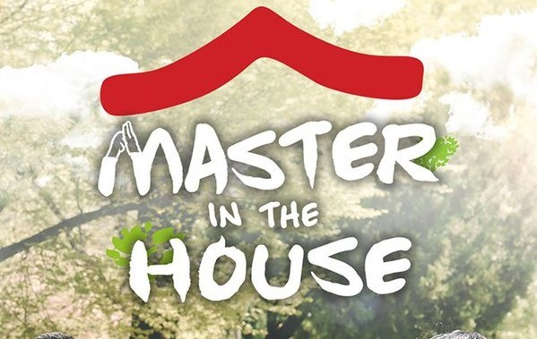

My Top 10 Favorite Show
Top 1
Running Man

This shows will let the guests come to compete in solo or team challenges with or against the Running Man members. Mini-games, quests, puzzles, fights, physical combat, races, and other challenges are all available.
Top 2
Law of the Jungle

A reality show that combines drama and documentary elements. The show takes viewers to exotic locales all around the world, where celebrities must collaborate to achieve objectives and survive.
Top 3
Busted

The show is a cross between a reality show and a crime thriller, since celebrities that feature on it are assigned playing parts while solving mysteries.
Top 4
Sixth Sense
Every week, the cast will come across the hottest venues or persons, and they'll have to spot one fake set-up.
Top 5
Knowing Bros

This program is characterized as a reality television variety show in which the cast members and guests meet in a classroom setting to discuss personal issues and play games.
Top 6
Village Survival

Village Survival, the Eight is a mystery variety show in which celebrities stay together in the countryside for 24 hours playing games in order to get clues that point to where $10,000 is hidden somewhere in the village
Top 7
Delicious Rendezvous

Delicious Rendezvous is a program that helps farmers by creating fresh cuisines utilizing low-demand local delicacies.
Top 8
Master in the House

The cast spends two days and one night with respected personalities from various disciplines or professions, referred to as Masters, learning about their life in the hopes of obtaining knowledge and wisdom.
Top 9
We Got Married
The show paired up celebrities who pretended to be married couples and completed various challenges together.
Top 10
Amazing Saturday

In this show, the South Korean market is highlighted, with three different types of food chosen as its representations. To be able to eat the cuisine, the cast and guest(s) must play games and win.